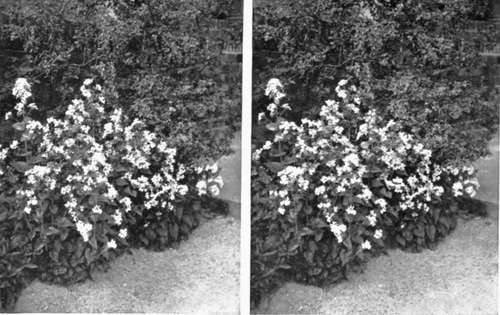
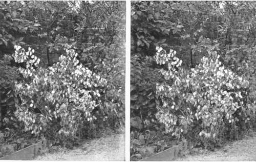

Birds And Their Nests And Eggs. Part 7
Description
This section is from the book "Nature Photography For Beginners", by E. J. Bedford. Also available from Amazon: Nature Photography for Beginners.
Birds And Their Nests And Eggs. Part 7
Now we will make straight for the Plovers' field, and as their nests are very difficult to find we may not succeed in discovering one. The hen bird, if on the nest, will rise directly she hears the alarm note of her mate, who will probably see us while we are still a considerable distance off, so be prepared directly we come to the gate at the entrance to the field to try and mark the spot where a bird may rise from. Come very quietly and when you are ready I will clap my hands. There! two birds flew up and I have marked the place one rose from as near as I can. Let us walk straight up; I will keep my eyes on the spot, and take care you do not put your foot into a clutch of eggs as you walk across the field. We are now very near the spot where the bird seemed to rise from, and, look, we are very near the nest too! Another yard and you would have walked over it. There are four beautifully-marked eggs; notice how they are arranged with the pointed ends in the centre. By this arrangement the eggs take up less space and are easier for the bird to cover. They are large in size, for the bird, in common with the eggs of most birds whose chicks run very soon after being hatched, and young birds of this kind leave the egg more fully developed than those of the warblers, etc., which are born blind and do not get their sight for about five days after being hatched. These young Lapwings, about an hour after they are hatched, in fact as soon as the warmth of their mother has dried their soft down, will run and look after themselves, and this they do in a remarkable manner by crouching on the ground and trying to conceal themselves when danger threatens.
Even had we not already discovered the nest, we should know there was one not far off as the birds are flying round us continually, uttering their plaintive cry, pee-e-wit, pee-e-wit, pee-e-wit. Look at the pair of them how they try to attract our attention by swooping down to the ground quite close to us. If we could, we would tell them they have nothing to fear; we only want to " take " their eggs, in the sense of obtaining a photograph of them. But I know, however clever birds are—and I am inclined to think they know more than we give them credit for—they could not understand us, so the only thing to do is to take the photograph and get away from the eggs as quickly as possible.
Fig. 48. Honesty in Bloom.
Fig. 49. Honesty in Seed (same plant as Fig. 48).
As the subject gets the full light from the sky the exposure may be brief and need not exceed the minimum indicated by the exposure meter. Now retreat five or six yards from the nest and expose another plate to show the site of it. This will give a good idea of how difficult the eggs are to see a short distance away. Before you leave the spot I want you to notice the difference between this nest and that of the Long-tailed Tit we found last week. This one can hardly be called a " nest " in comparison, as it only consists of a few bits of dried grass lining the little tuft of green grass which has been shaped by the breast of the sitting bird. The longer pieces of the grass stand up round the eggs and help to conceal them. Most of the ground-nesting birds' eggs have a peculiar glossy surface which reflects the light from the sky. This again helps to conceal the characteristic markings and so makes them more difficult to see. The birds themselves know the safest way is to leave their eggs to their natural surroundings as soon as any danger threatens, and such eggs are more likely to be discovered by accident than otherwise. Unless we possess some knowledge of the method of finding them, hours may be spent in an unfruitful search. I can recall, in my earlier days, many attempts to find them, without success.
The Long-tailed Tit's nest takes from two to three weeks to construct, and is rightly considered one of our most beautiful examples of Bird Architecture. It has been known to contain as many as two thousand feathers in the lining, each one probably meaning a separate journey for the tiny architect. As some of the earlier nests are built before there is any foliage on the bushes they are often discovered and ruthlessly torn out. It always makes me sad to come across a case of this kind, and it is hard lines on the builder, after devoting so many hours of labour, to have it made of no avail in a few moments by some unthinking boy or man. I hope you will do all you can to discourage such conduct.
Another Lapwing rose a short distance away from the first, but as we have obtained a photograph of one clutch of eggs we will not attempt to find the second nest now. I am glad you have brought eighteen plates to-day as nests are now getting more numerous. We will try and obtain a like number of different subjects, unless one occurs which ought to have more than one plate exposed on it, like the Lapwing's nest we have just left. We might look round the hedges of this field to start with, as they have been cut down during the past winter and will therefore allow you to easily photograph any nest found therein. Here is one, another nest of the Chaffinch, and it has four eggs in it. This, again, is one of our most beautiful nests, so small and neat and so tightly woven together, the outside covered with lichen and made to resemble so closely the lichen-covered fork of the branches containing it. This nest is well exposed to view, and you ought to be able to get a very good photograph of it.
When you have done, here is another Robin's nest, this time in a hole in the bank just beyond where you are standing.
The bird flew out when I tapped the hedge with my stick. It contains five eggs, and there is a pretty root of Primroses close to it which I think you will be able to include in the picture. Notice how the dead leaves, which are used a good deal in the foundation of the nest, are also left about in an apparently untidy way near the entrance. This to the ordinary eye would divert attention from the nest, but to the trained eye would draw attention to it. As it will take you some little time to make the exposure on these two subjects, I will search a little further on while you are doing so. Be careful to rake up the long grass where you have been standing after you have finished, as if left trodden down this will call attention to the place and the nest may suffer in consequence. When possible, I always like to get a chance of taking the portraits of the young birds when they get old enough. The best time is just before they can fly, and if the nest is not discovered in the meantime we shall be able to do this later on.
Continue to:
- prev: Chapter IX. How To Observe And Photograph Some Of Our Commoner Birds And Their Nests And Eggs. Part 6
- Table of Contents
- next: Birds And Their Nests And Eggs. Part 8
Tags
nature, photography, art, birds, camera